Structure-based Ranking¶
The Value of Links¶
A tiny web:

Two pages with the same content. Which one is more relevant?
- Number 1, since it has more pages referencing it.
Centrality and Prestige¶
Degree of a node¶

Degree Centrality¶
For undirected graphs:
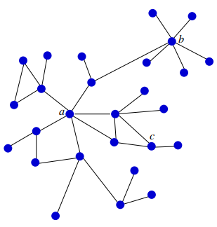
In a graph with n nodes:
- C_D(v)= {d(v) \over n-1}
- Example:
- C_D(a)=C_D(b)= {6\over 27}
- C_D(c)= {3 \over 27}
C_D is a local measure: only depends on local neighborhood of nodes
Closeness Centrality¶
- d(v,u): distance (= number of links on shortest connection) between v and u
- C_C(v)= {n-1 \over \sum_{u\in V} d(v,u)}
- Example:
- C_C(a)= {26 \over 54}
- C_C(b) = {26\over 80}
C_C is a global measure: depends on the whole network
Case of disconnected networks needs special treatment
Caution: when large networks have a small diameter (small world phenomenon), then C_C values will be very similar for almost all nodes
- Social network problem, everyone is connected to everyone in a relatively small path
Degree Prestige (In-degree Centrality)¶
For directed graphs

- P_D(v) = {d_i(v) \over n-1}
- Example
- P_D(a) = P_D(b) = {5 \over 23}
- P_D is another local measure
Local measures can easily manipulated by link spamming:
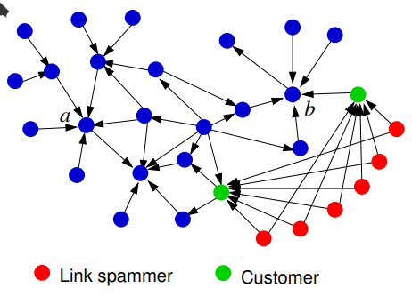
- More difficult (but still possible) to manipulate global measures
Page Rank¶
First reported in: Brin, S., & Page, L. (1998). The anatomy of a large-scale hypertextual web search engine.
- PageRank originally defined for ranking we pages
- Inspired by earlier works in link analysis (web and citation analysis)
- The ideas/principles of PageRank have been adpoted to measure node centrality/importance in many contexts

- a and b have the same degree prestige
- The pages linking to a have a higher prestige than the pages linking to b
Rank Prestige¶
- This does not directly define P_R
- Only defines mutual relationships between P_R values
- Can we find and compute a P_R measure that satisfies these relationships?
Web surfer: slides 13-
Example: 10.000 random web surfers:


PageRank idea: the rank (prestige) of a web-page is proportional to
- the proportion of random web-surfers that will be visiting the page at a given point in time
- = the probability that a random web-surfer is at this page at any point in time
Markov Chain Model¶
The random surfer is described by
-
a probability distribution
- \bold q^{(0)}=(q_1^{(0)}, \dots, q_n^{(0)})
over all web-pages. q_i^{(0)} : probability of starting to surf on page i
-
a transition probability matrix

P_{i,j} : probability of moving to page j given we are currently on page i: =0 if there is no link from i to j, otherwise
compactly:
with D_O: diagonal out-degree matrix, A: adjacency matrix
Example¶

For a random surfer starting at page 1:
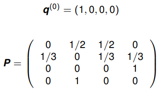
- \bold q^{(t)} = (q_1^{(t)}, \dots, q_n^{(t)}) probability distribution over web pages at time t
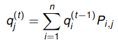
Collected for all j, in matrix notation:
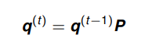
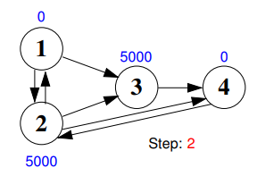
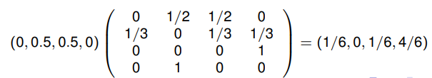
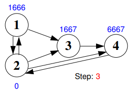
Stationary Distribution¶
- \bold q is stationary if
- \bold q = \bold q \bold P
- I.e.: \bold q is eigenvector of \bold P with eigenvalue 1
Under some conditions*
- a Markov chain has a unique stationary distribution \bold q ^*
- for any \bold q^{(0)}

Example¶

- We get the same vector back again
Irreducibility¶
*First condition.
Not irreducible:

- the limiting distribution depends on the initial distribution (starting point)
A Markov chain is irreducible if every state is reachable from every other state
Aperiodicity¶
*Second condition
Not aperiodic:
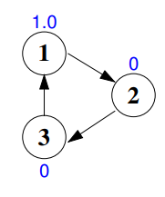
-
A state i in a Markov chain is periodic if starting from one i one can only return to i in $$ k,2k,3k,\dots,nk, (n+1)k,\dots $$ many steps, where k>1
-
Above: all states periodic with k=3
-
A Markov chain is aperiodic if it has no periodic states
Summary¶
If a Markov chain is irreducible and aperiodic, then it
- has a unique stationary distribution \bold q^*
- for any \bold q^{(0)}:
- \lim_{t\to \infty} \bold q(t)=\bold q^*
Problems¶
A small web:
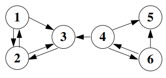
Transition matrix:

Problem 1
- No proper transition matrix, because dangling pages (ex: page 5) have no defined transitions
Solution 1
- Add transitions from dangling pages to all other pages:
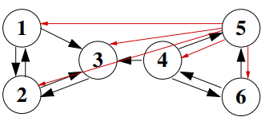
-
"random restart" of the web searching if ending up at dangling edge
-
Transition matrix
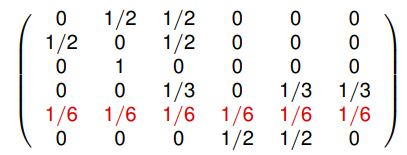
Problem 2
- Markov chain not irreducible (and maybe not aperiodic)
Solution 2
-
Add additional transitions from all states to all other states, so that total probability of these extra transitions is 1- d
-
New transition matrix:
-
\bold P_{PR}=

-
PageRank Defined¶
The page rank of webpage i is
where \bold q^* is the limit distribution of the Markov chain defined by \bold P_{PR}
It is computed (approximately) by iterating

until \bold q^{(t)} does not change very much
The Undirected Case¶
Let
- G an undirected graph, \bold d = (d(1), \dots, d(n)) degree vector
- d := \sum_{i=1}^n d(i)
- q_i := d(i) / d
Then
- \bold q = (q_1,\dots,q_n) is a stationary distribution of the random walk on G
Proof


HITS Algorithm¶
J. Kleinberg: Authoritative Sources in a Hyperlinked Environment. J. of the ACM, 1999
Alternative to PageRank
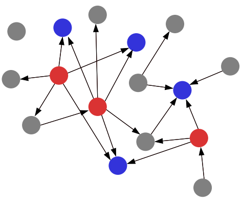
2 different types of important nodes
- Hubs (red): Web pages pointing to many (relevant) pages
- Example: Business listings (yellow pages)
- Authorities (blue): Web pages linked to by many other pages
- Example: Important company homepages
Algorithm¶
Step 1
Retrieve top t of webpages for query (mostly content-based):
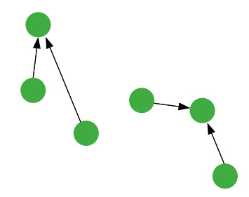
- Result: the root set
Step 2
Add all neighbors (up to a maximum number) of the pages in the root set:

- Result: the base set
Step 3
Compute the hub and authority scores for all pages v in the base set, implicitly defined by:
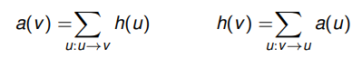
In matrix notation:
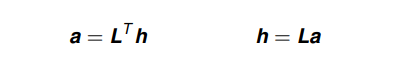
where \bold L: link matrix.
Alternatively (separating \bold a and \bold h):

-
Solutions \bold a, \bold h are found by the same iterative approximation as used for q ∗ computation (slide 26)
-
Since \bold L^T \bold L and \bold {LL}^T are not irreducible, aperiodic Markov chains, solutions \bold a, \bold h need not be unique